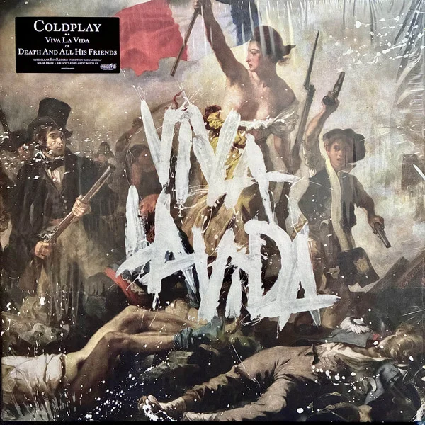

Song - Viva La Vida

Lyrics
I used to rule the world Seas would rise when I gave the word Now in the mornin', I sleep alone Sweep the streets I used to own
I used to roll the dice Feel the fear in my enemy's eyes Listened as the crowd would sing "Now the old king is dead, long live the king"
One minute I held the key Next, the walls were closed on me And I discovered that my castles stand Upon pillars of salt and pillars of sand
I hear Jerusalem bells a-ringin' Roman cavalry choirs are singin' Be my mirror, my sword and shield My missionaries in a foreign field
For some reason, I can't explain Once you'd gone, there was never an honest word And that was when I ruled the world
It was a wicked and wild wind Blew down the doors to let me in Shattered windows and the sound of drums People couldn't believe what I'd become
Revolutionaries wait For my head on a silver plate Just a puppet on a lonely string Oh, who would ever wanna be king?
I hear Jerusalem bells a-ringin' Roman cavalry choirs are singin' Be my mirror, my sword and shield My missionaries in a foreign field
For some reason, I can't explain I know St. Peter won't call my name Never an honest word But that was when I ruled the world
Hear Jerusalem bells a-ringin' Roman cavalry choirs are singin' Be my mirror, my sword and shield My missionaries in a foreign field
For some reason, I can't explain I know St. Peter won't call my name Never an honest word But that was when I ruled the world